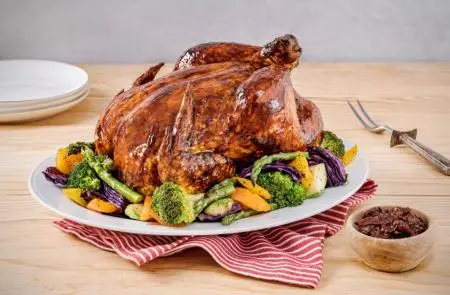
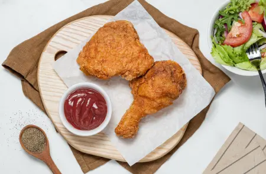

Explora las nuevas recetas de Aves
Mole Poblano con Pollo
Mole Poblano con Pollo
Ingredientes:
- 2 Tazas de agua
- 1 Cucharada de consomé de pollo en polvo
- 1 Frasco de mole (235 g)
- 1 Tableta de Chocolate para mesa ABUELITA®
- 4 Piezas de pollo cocidas
- 2 Cucharadas de ajonjolí
¡A cocinar!
- Licúa el agua con el consomé de pollo, el mole y el Chocolate para Mesa ABUELITA®; calienta durante 8 minutos a fuego medio hasta que espese ligeramente, moviendo para que no se pegue y reserva.
- Sirve un poco de mole sobre el plato con el pollo y cubre con más mole.
- Decora con el ajonjolí. Ofrece.
Pollo Adobado en Air Fryera
Pollo Adobado en Air Fryer
Ingredientes:
- 1 Lata de Leche Evaporada CARNATION® CLAVEL®
- 1 Taza de almíbar de piña
- 3 Chiles ancho sin semillas y remojados en agua caliente
- 4 Chiles guajillo sin semillas y remojados en agua caliente
- 2 Cubos de Concentrado de Tomate con Pollo CONSOMATE®
- 1 Pollo entero y limpio
- 1 Taza de jugo de naranja
- 1 Cucharada de sal con cebolla en polvo
- Aceite en aerosol
¡A cocinar!
- Para el adobo, licúa la Leche Evaporada CARNATION® CLAVEL®, el almíbar, los chiles y el Concentrado de Tomate con Pollo CONSOMATE®. Calienta lo que licuaste hasta que espese ligeramente moviendo constantemente para evitar que se pegue. En un recipiente, coloca el pollo e insértale al centro la barra del asador; inyéctale el jugo de naranja, espolvorea la sal con cebolla y marina en refrigeración por 30 minutos con el adobo.
- Fija las alas a la pechuga con ayuda de unos palillos. Añade un poco de aceite sobre el pollo, cubre las alas con papel aluminio y con ayuda del tenedor para asador coloca el pollo en la freidora de aire y fríe con aire a 185 °C por 1 hora. Barniza cada 20 minutos el pollo con el adobo restante. Retira el papel aluminio de las alas y cocina por 30 minutos más.
- Calienta el adobo restante con el jugo que soltó el pollo al cocinarlo hasta que hierva. Corta el pollo y acompaña con el adobo restante; ofrece.
Pollo a la Cazuela
Pollo a la Cazuela
Ingredientes:
- 4 Jitomates asados
- 1/4 De pieza de cebolla asada
- 3 Chiles guajillo sin semillas y remojados en agua caliente
- 1/4 De cucharadita de comino molido
- 1/2 Taza de ciruela pasa
- 2 Tazas de agua
- 2 Cucharadas de consomé de pollo en polvo
- 1 Tableta de Chocolate para Mesa ABUELITA® troceada (90 g)
- 4 Piezas de pollo cocidas
- 4 Piezas Papas cocidas y cortadas en cuartos
¡A cocinar!
- Licúa el jitomate con la cebolla, el chile guajillo, el comino, la ciruela, el agua y el consomé de pollo.
- Vierte la salsa en una olla con el Chocolate para Mesa ABUELITA® y cocina por 20 minutos a fuego bajo.
- Coloca las piezas de pollo en la olla con las papas y cocina por 10 minutos más. Sirve y ofrece.

Pollo al Chipotle
Pollo al Chipotle
Ingredientes:
- 6 Cucharadas de Jugo MAGGI®
- 6 Cucharadas de Salsa Inglesa CROSSE & BLACKWELL®
- 1/2 Taza de Chile chipotle
- 1/4 De Kirkland Signature® Pimienta negra
- 1/4 De taza Kirkland Signature® Ajo picado
- 1 Pollo entero
¡A cocinar!
- Horno precalentado a 180 °C
- Licúa el Jugo MAGGI® con la Salsa Tipo Inglesa CROSSE & BLACKWELL®, el chipotle, la Kirkland Signature Pimienta Negra y el Kirkland Signature Ajo Picado.
- Coloca el pollo en un refractario y cubre con la salsa. Cubre con papel aluminio y refrigera por 2 horas.
- Coloca el refractario en el horno y cocina a 180 °C por 80 minutos. Sirve y disfruta.

Pollo Frito
Pollo Frito
Ingredientes:
- 1 Huevo
- 1 Lata de Leche Evaporada CARNATION® CLAVEL®
- 2 Cucharaditas de mostaza
- 1 1/2 Tazas de harina de trigo, pasada por un colador
- 1/2 Taza de fécula de maíz
- 1 Cucharada de pimienta negra molida
- 1 Cucharadita de sal
- 3 Cucharadas de páprika en polvo
- 10 Piezas de pollo limpias
- 1 Taza de harina de trigo pasada por un colador
- 1 Cucharadita de comino en molido
- 2 Cucharaditas de páprika en polvo
- 2 1/2 Cucharaditas de pimienta negra molida
- 2 1/2 Cucharaditas de sal con cebolla en polvo
¡A cocinar!
- Mezcla el huevo, la Leche Evaporada CARNATION® CLAVEL®, la mostaza, 1 ½ tazas de harina de trigo, la fécula de maíz, 1 cucharada de pimienta, la sal y 3 cucharadas de paprika. Añade las piezas de pollo y marina en refrigeración por 2 horas.
- Para el empanizado, mezcla 1 taza de harina, el comino, 2 cucharaditas de paprika, ½ cucharada de pimienta y la sal con cebolla. Cubre el pollo con la mezcla anterior.
- Calienta el aceite y fríe el pollo por ambos lados hasta que dore ligeramente, coloca sobre papel absorbente para retirar el exceso de grasa. Acompaña con tu ensalada favorita y ofrece.

Fajitas de Pollo con Nopal
Fajitas de Pollo con Nopal
Ingredientes:
- 4 Cucharadas de aceite vegetal
- 1/2 Cebolla fileteada
- 7 Nopales cortados en tiras y cocidos
- 1 Chile serrano fileteado
- 500 Gramos de pollo en fajitas
- 1/4 De cucharadita de comino molido
- 3/4 De taza de granos de elote blanco cocidos
- 4 Cucharadas de Jugo MAGGI®
- 1 Cucharadita de sal con cebolla en polvo
- 8 Tortillas de maíz calientes
¡A cocinar!
- En una sartén, calienta el aceite, fríe la cebolla y el chile hasta que esté dore ligeramente, añade los nopales y cocina por 3 minutos.
- Agrega las fajitas, el comino, los granos de elote, el Jugo MAGGI®️ y la sal con cebolla; cocina por 10 minutos más.
- Acompaña con las tortillas y ofrece.
Suscríbete a Nuestro Newsletter
¡Registro Exitoso!
¡Felicidades, te has registrado con éxito! Ahora recibirás nuestras recetas primero.